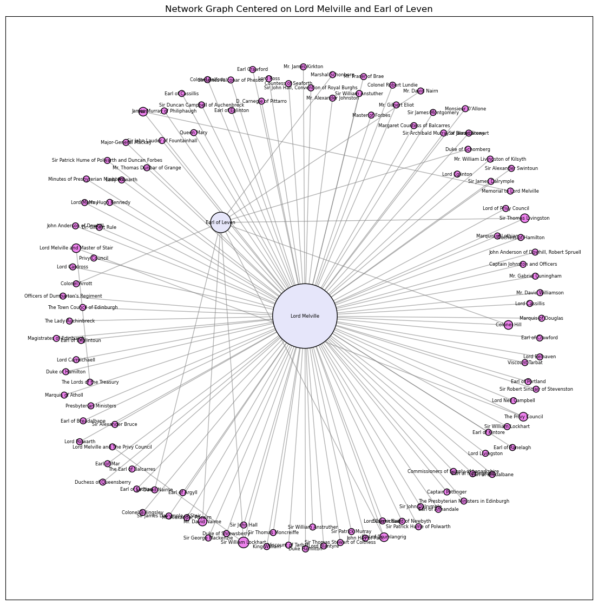
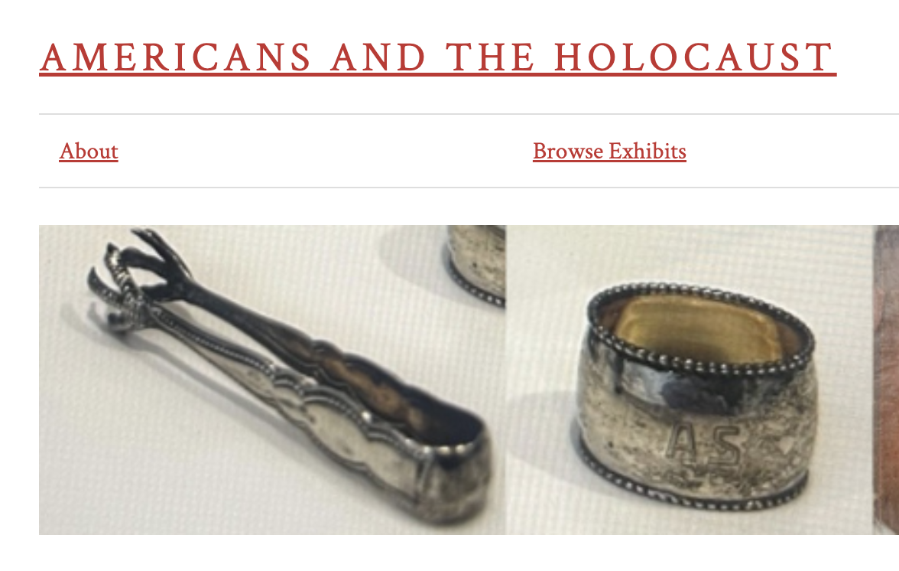
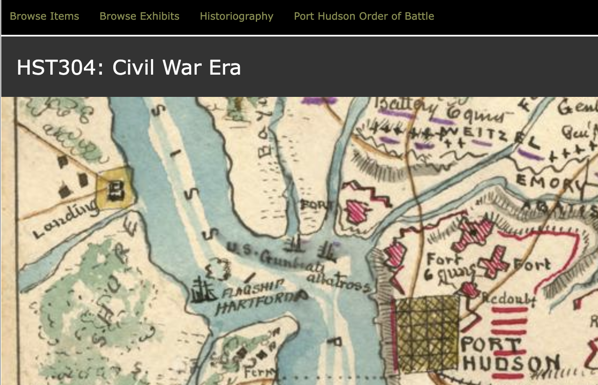
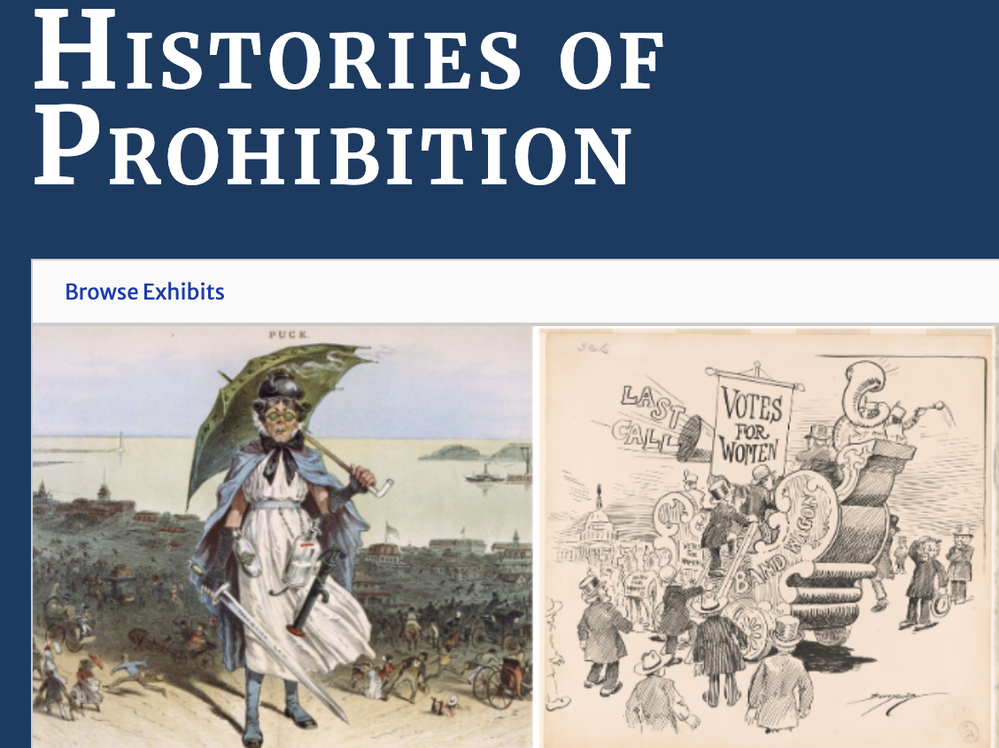

I bring a unique combination of historical inquiry, digital infrastructure leadership, digital research skills, and a commitment to publicly engaged scholarship.
As Director of LEADR, I have built a thriving collaborative research infrastructure, securing over $257,000 in external funding and an additional $33,500 in internal support, along with $17,500 in teaching and learning equipment. I have extensive experience mentoring graduate students and postdocs, and fostering partnerships across campus and with community organizations. Over the next 5-7 years, I aim to establish myself as a leading scholar of historical information networks while building LEADR into a model for publicly engaged digital humanities research.
My research output and agenda are driven by two interwoven threads: the production of analytical digital history projects using digital tools alongside traditional historical research, and digital public engagement projects in collaboration with both academic and non-academic partners using digital tools and methods.

Many of my current projects are ongoing and have threaded collaboration into my daily workflows. My current research investigates how information networks have shaped political and cultural life from the early modern period to the present. Currently, I am digitally reconstructing seventeenth-century those correspondence networks in Networking the Revolution, this combines traditional methods with digital techniques, allowing me to trace patterns of information exchange that would otherwise remain invisible. Methodologically, this project combines traditional archival research with digital network analysis and visualization. With support from institutional seed funding ($3,750), I have developed computational approaches that allow me to virtually reconstruct information pathways through individuals using network analysis and mapping. Using publicly available metadata, this approach allows me to visually contruct networks of communication that have been lost, while remaining grounded in close reading of primary sources and historical context.
Between 1688 and 1692 thousands of letters were exchanged between people all over Scotland and the wider British Atlantic World. At present the project contains over 2,000 letters collected from the Manuscripts of the Duke of Hamilton and the Papers of the Leslie Family, the Earls of Leven and Melville. Using methods from network science and prosopography combined with traditional political history approaches, the project maps the relationships, clusters, and communication pathways that persisted during this period of violent upheaval and warfare. The research demonstrates how people remained connected through correspondence despite chaotic circumstances, revealing the social and political structures that shaped the Revolution's trajectory across the British Isles. As an open-access initiative, the project contributes both historical insights and methodological innovations to early modern studies. All data is publicly available through a GitHub repository and an API, enabling scholars to conduct their own analyses. By democratizing access to these critical historical sources and computational tools, the project expands research possibilities for understanding this transformative period that fundamentally shaped the modern British state and its emerging Atlantic empire.
Outside of my own research, I am also co-PI on two ongoing research initiatives for public consumption:
In addition, I am deeply committed to publicly engaged scholarship. I led the development of a major digital and physical museum exhibition Abundant Waters on Michigan’s and Michiganders' relationship with the water. This project was supported by a grant from the American Library Association’s American Rescue Plan: Humanities Grants for Libraries and involved collaboration with colleagues around Central Michigan University, local Indigenous communities, and the public. The exhibition combined traditional curatorial practices with digital storytelling techniques, making historical narratives accessible to a broad audience. This project exemplifies my dedication to making history relevant and engaging for the public while showcasing the potential of digital methods in historical scholarship. In my role as director of LEADR, I have brought this experience into building classroom projects including several classes that have used Omeka the build digital exhibits.



My teaching philosophy centers on connecting historical knowledge to contemporary practice, fostering collaboration across disciplinary boundaries, and preparing students to engage with real-world information challenges.
When I began teaching in 2015, a graduate student asked me what my goal in the classroom was and I simply said, “getting them to talk.” I’ve come back to this philosophy but instead now my answer is to engage students in conversations and telling stories about what excites them. I have taught in lecture, online, and hybrid formats, and have curriculum design and support experience that has deepened my understanding of how to structure effective learning experiences across different delivery modes. My teaching experience includes content-based and methodology-based courses including classes on historical methods and skills, digital history methods, and many medieval, early modern, and interdisciplinary classes at MSU. I have mentored undergraduate and graduate students in both traditional archival research and in interdisciplinary computational approaches.
At a graduate level I have two roles in training and mentorship, I co-direct a fellowship in cultural heritage informatics which provides graduate students with the skills to apply computational methods to the domain of cultural heritage and I serve as primary supervisor for between 4 and 5 graduate assitants for LEADR each semester. The CHI fellowship is fundamentally rooted in applied skills with an ethos of openness, interdisciplinary interaction, and collaboration. Most importantly, I listen to students. I regularly seek feedback about what’s working and what’s not, adjust my teaching to their needs, and create courses where students’ own experiences and perspectives inform our collective learning. After teaching a digital history methods course this fall semester, I was delighted to learn that one of my students had commented that I had enhanced their experience at MSU in a broad sense because they had gained the skills to help their learning in any class.
As Director of LEADR, I have mentored undergraduate research assistants in digital research methods, project management, and public scholarship, while also training graduate students in digital pedagogy and classroom teaching. At LEADR, we support digital components in courses across disciplines including history, anthropology, and integrated humanities and social sciences, which supports departmental commitments to immersive and experiential learning. The core of my role as director involves training graduate students in digital pedagogy. Their training goes beyond simply learning tools—they’ll develop pedagogical frameworks for making technical skills accessible to diverse learners, build digital literacy progressively, and connect digital methods to disciplinary questions and critical thinking. We discuss how to troubleshoot technical problems in real-time, how to assess digital projects meaningfully, how to create inclusive learning environments, and increasingly, how to teach students to use emerging technologies like generative AI responsibly and effectively. This work demonstrates our commitment to addressing contemporary challenges in digital pedagogy.
Curriculum support and development have occupied a portion of my duties since becoming both interim and full director of the Lab for the Education and Advancement in Digital Research (LEADR). This effort has been centered on the applicability of digital research skills in the 21st century, specifically in history and anthropology classrooms.
I understand service as extending scholarly expertise beyond research and teaching to build infrastructure, support communities, and strengthen institutions. My service work operates at multiple levels—departmental, campus-wide, disciplinary, and public—all unified by my commitment to making information practices more accessible, equitable, and impactful. Since becoming Director of LEADR in 2024, I have worked to make LEADR a hub for digital innovation and play. The lab now operates at 200% of its original capacity and the graduate students selected for the assistantship duties are excellent.
LEADR’s mission focuses on enhancing traditional humanities education through digital technologies. Specifically, LEADR aims to bridge the gap between traditional classroom approaches in History and Anthropology—which already excel at promoting field knowledge, critical thinking, research, and writing skills—and modern digital competencies. The lab serves as a collaborative space where students can develop 21st-century digital skills that complement their traditional academic training, giving them a competitive edge in the job market. LEADR supports students in experimenting with digital tools, whether they're beginners or experts, and integrates digital projects seamlessly into coursework through data visualization, digital storytelling, and digital pedagogy approaches.
In my role as director, I have collaborated with faculty across departments to integrate digital components into their courses, enhancing student engagement and learning outcomes. This includes developing workshops on digital tools, advising on curriculum design, and providing technical support for digital projects. I have also organized seminars and guest lectures to expose students and faculty to emerging trends in digital humanities. Through these efforts, I have contributed to fostering a culture of innovation and collaboration within the academic community, ensuring that digital literacy becomes an integral part of history and anthropology education. At the graduate level, I provide training and mentorship in digital pedagogy, helping graduate students develop the skills and confidence to incorporate digital methods into their teaching. This includes workshops, one-on-one consultations, and collaborative curriculum development, all aimed at enhancing the quality and accessibility of digital education. I also co-direct a fellowship program in cultural heritage informatics (computation) which has further developed my capacity for program leadership. Managing a competitive selection process that annually attracts 15-20 applications for 8 positions requires coordinating faculty review committees, establishing evaluation criteria, ensuring equitable assessment, and overseeing year-long mentoring relationships. This work has taught me how to build programs that balance rigor with inclusivity, maintain high standards while supporting diverse participants, and create sustainable structures that continue beyond individual leadership.
Beyond my home department, I provide digital pedagogy support across campus, working with faculty and graduate instructors in history, anthropology, and integrated humanities and social sciences courses. This service involves consultations on incorporating digital methods into existing courses, developing assignments that balance technical skills with disciplinary content, troubleshooting technological challenges, and training graduate instructors to teach digital tools effectively. This cross-departmental service has given me experience working with diverse disciplinary perspectives, understanding different departmental cultures, and building collaborative relationships across campus.
At the disciplinary level, I have serve as a member of the American Historical Association's Digital History Working Group where we are among other things, providing resources to navogate through the current political climate, provide evaluators for tenure and promotion cases, and develop best practices for evaluating digital scholarship in history. This work involves collaborating with historians from various subfields to create guidelines that recognize the unique contributions of digital projects while maintaining rigorous scholarly standards. Through this service, I contribute to shaping the future of historical scholarship in the digital age, advocating for the recognition and evaluation of digital work within the broader academic community. Overall, I approach service not as obligation separate from scholarly work but as extension of my core commitments to access, collaboration, and impact. The same values that orient my research (understanding how information practices shape society) and teaching (making knowledge accessible and exciting to diverse learners) animate my service work: building infrastructure that enables others' success, creating opportunities for students and colleagues, and ensuring that scholarly expertise serves public needs.